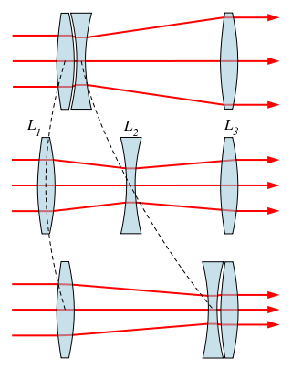
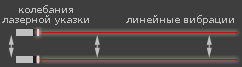
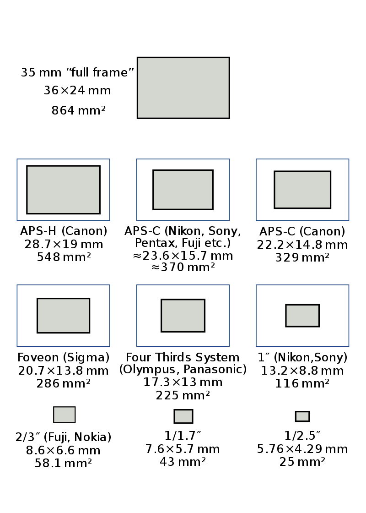
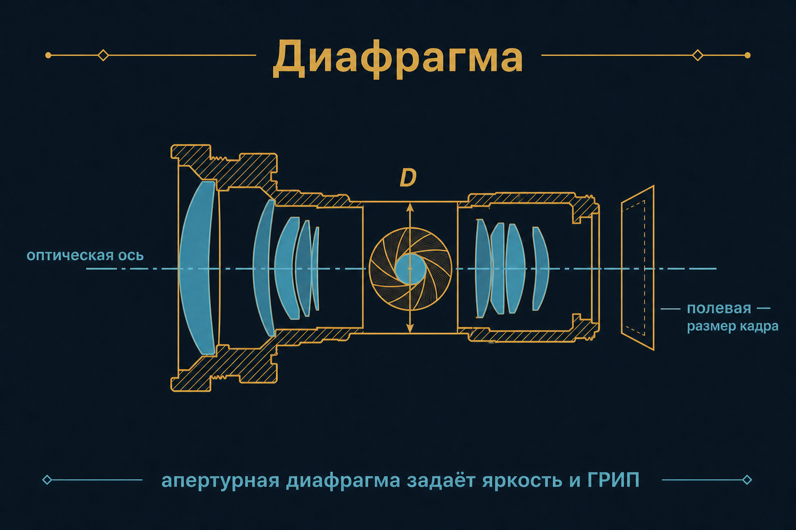
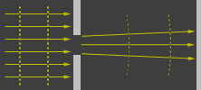
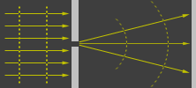

fmax / fmin20–100 мм → 5× · цифровой зум — интерполяция, не оптика

Fix vs zoom
У зума обычно: хуже контраст, ниже светосила, больше вес, кадрирование только при сквозном визировании, цена.
Поле зрения
Часть пространства предметов, видимая данной оптикой. Угловое поле — конус от передней главной точки к краям кадра.
Поле изображения — центральная часть с достаточной резкостью и освещённостью. Его диаметр задаёт диагональ кадра (полевая диафрагма).
2ω ≈ 2 arctg(d / 2f)d — сторона или диагональ кадра
По углу поля зрения
f (экв. 35 мм)
Группа
Типично
< 21 мм
сверхширокоугольные
архитектура
21–35 мм
широкоугольные
ландшафт
35–70 мм
нормальные
улица, документ
70–135 мм
ближние теле
портрет
135–300+ мм
телеобъективы
спорт, природа
Таблица — про угол, не про физическое f на кропе
Фокусное и смаз
t ≲ 1/fс рук, кадр 24×36 · f в миллиметрах
Длиннее фокусное — сильнее «прыгает» картинка.

Размер сенсора

Кроп-фактор
Отношение диагонали стандартного кадра 24×36 мм к диагонали используемого кадрового окна. Меняется поле зрения, не физическое f оптики.
кроп = d24×36 / dматрицыполе уже, фокусное оптики то же
Эквивалентное фокусное (ЭФР)
Какое f имел бы объектив на кадре 24×36 мм при том же угле обзора. Диагональ полного кадра — 43,27 мм.
fэкв = f · кропв масштаб АФС подставляют физическое f, не эквивалент
По способу фокусировки
Автофокусный — мотор и интерфейс с камерой
Ручной
Фикс-фокус — на заводе на гиперфокал или бесконечность
Диафрагма
Элемент оптической системы, ограничивающий световые пучки. Апертурная диафрагма стоит вблизи центра системы: задаёт диаметр входного зрачка D, освещённость кадра и ГРИП. Полевая диафрагма задаёт размер кадра (кадровое окно).

Диафрагмирование отсекает краевые лучи → меньше геометрических аберраций, сильнее дифракция. Дисторсию почти не лечит.
Диафрагма: резкость и дифракция


Относительное отверстие 1/n₀
Отношение диаметра входного отверстия D к фокусному f. Оптическая мера светопропускания: яркость изображения на матрице.
1/n₀ = D / fна оправе пишут 1:2,8
Геометрическое и эффективное
Эффективное учитывает поглощение и рассеяние в стекле. Без просветления потери до десятков процентов.
Просветление — тонкие плёнки на границе воздух–стекло (интерференция; ещё поляризация, микротекстура, градиент n).
Диафрагменное число n₀
n₀ = f / Dшаг √2 · соседние значения — вдвое по свету
Меньше n₀ — больше отверстие. «Светосильные»: 1:1,4 · 1:2 · 1:2,8. Путают «больше диафрагма» и «больше число»: на оправе больше K — отверстие меньше.
Диафрагменное число
n₀ = f / D
Обратно относительному отверстию. Меньше число — больше отверстие.
Глубина резко изображаемого пространства (ГРИП)
Отрезок вдоль оптической оси в пространстве предметов, в пределах которого изображения точек укладываются в допустимый кружок нерезкости c.
Абсолютно резка только плоскость наводки. Остальное — «достаточно резко для выбранного c».
Кружок нерезкости
Формулы ГРИП
Глубина резко изображаемого пространства
ГРИП = R2 − R1
где R1 — передняя граница, R2 — задняя граница, вдоль оси в пространстве предметов
Передняя граница R1
R1 = R · f2 / (f2 − K · f · c + K · R · c)
где R — дистанция наводки, f — фокусное расстояние, K — диафрагменное число, c — допустимый кружок нерезкости (те же единицы, что f)
Задняя граница R2
R2 = R · f2 / (f2 + K · f · c − K · R · c)
если знаменатель ≤ 0, задняя граница уходит в бесконечность (наводка на гиперфокал или дальше)
Живая схема: K и ГРИП
D — диаметр входного отверстия, D = f / K. Зелёная полоса — ГРИП. Золотая пунктир — плоскость наводки R. В схеме c = 0,02 мм.
Границы ГРИП
R₁ передняя · R наводка · R₂ задняя · K диафрагменное число · z кружок нерезкости
Гиперфокальное расстояние
Дистанция наводки, при которой задняя граница ГРИП уходит в бесконечность. Навели на H — резко от примерно H/2 до ∞.
Гиперфокальное расстояние
H = f2 / (K · c) + f
где f — фокусное расстояние, K — диафрагменное число, c — допустимый кружок нерезкости
Границы ГРИП через H (приближённо, f ≪ H и f ≪ R)
R1 = H R / (H + R)
передняя граница
R2 = H R / (H − R)
задняя граница; если R ≥ H, то R2 → ∞
Для фотографа
Отверстие больше
Отверстие меньше
n₀ на камере
меньше
больше
Свет
больше
меньше
Выдержка
короче
длиннее
ГРИП
меньше
больше
Аберрации
больше
меньше
Дифракция
меньше
больше
Светосила
Отношение освещённости изображения к яркости объекта. Зависит от качества оптики, диаметра и фокусного.
Объектив «съедает» часть света: геометрическая и эффективная светосила не обязаны совпадать
Бленда
Трубка перед входным окном: отсекает посторонний свет. Родственна полевой диафрагме.
Макрообъектив
Масштаб увеличения β = l′ / l. Крупный план: |β| до 1:2. Макро: от 1:1 до 10:1. Микро: от 10:1.
Штатный объектив корригирован на предметные дистанции порядка метров. На дистанции ~10f аберрации растут — нужен макрообъектив, корригированный на близкий предмет.
При β = 1 выдвижение оправы ≈ 2f. Освещённость падает примерно в (1+|β|)2 раз; при 1:1 экспозицию увеличивают в 4 раза.
Минимальную дистанцию фокусировки считают от плоскости матрицы, не от передней линзы.
Фокусировка
Фокусировка — процесс совмещения плоскости сопряжённого фокуса с плоскостью матрицы.
Формула тонкой линзы
Связь фокусного, предмета и изображения
1 / f = 1 / R + 1 / d
где f — фокусное расстояние, R — расстояние от главной плоскости до предмета, d — расстояние от главной плоскости до изображения (сопряжённый отрезок). Для предмета на конечной дистанции d > f. Пример: f = 100 мм, R = 1 м → d ≈ 111 мм.
Аберрации
Аберрация — отклонение реального пучка от идеального. В идеальной системе пучок гомоцентрический: лучи из одной точки предмета снова сходятся в одну точку того же цвета.
Две группы аберраций
Хроматические
Связаны с тем, что n = n(λ). Контур окрашен. Два вида: хроматизм положения (фокус сидит в разных местах по λ) и хроматизм увеличения (масштаб по полю разный для разных λ).
Геометрические (Зейдель)
Даже для одной длины волны. Пять монохроматических: сферическая, кома, астигматизм, кривизна поля, дисторсия.
Хроматические аберрации
Коэффициент преломления зависит от длины волны: n = n(λ). Синие лучи преломляются сильнее и сходятся ближе к объективу. Красные лучи — дальше.
Как убирают хроматические аберрации
Для устранения хроматических аберраций проектируют специальные объективы из стёкол с разной дисперсией:
ахромат — две линзы (обычно крон + флинт); сводит в один фокус две длины волны (типично красную и синюю);
апохромат — сводит три длины волны;
суперапохромат — сводит четыре длины волны.
Хроматизм увеличения на краю кадра частично правят в JPEG/RAW. Хроматизм положения так не убрать: закрывают диафрагму (часто до K ≈ 2,8–4), чтобы обрезать краевые зоны.
Хроматика на кадре
Ортоскопичность
Дисторсия пренебрежимо мала: можно мерить по снимку. Рыбий глаз — наоборот. В фотограмметрии это не украшение, а условие работы.
Сферическая
Краевые зоны линзы фокусируют иначе, чем центр. Лечат диафрагмой и дефокусом схемы.
Кома
Точка вне оси → пятно-комета. Вместе со сферой исправляют в апланатах. Децентровка даёт кому и на оси.
Астигматизм и кривизна поля
Дисторсия
Линейное увеличение меняется по полю: нет геометрического подобия. Нарушение ортоскопии. Для АФС неприемлема «как есть» — калибруют.
Откуда берётся дисторсия
не дотянули ортоскопию на расчёте
погрешность изготовления линз
погрешность сборки
Центрированная — оси совпали, искажение симметричное. Нецентрированная — децентровка, симметрии нет.
Перспектива ≠ фокусное
Перспектива меняется с точкой съёмки, не с кольцом зума.
Виньетирование
Потеря контраста · ЧКХ
Частотно-контрастная характеристика: контраст изображения / контраст оригинала на данной частоте.
Байонет
Быстрое соединение оправы с корпусом: оптика стоит относительно матрицы. В цифре ещё и электрический интерфейс.
Рабочий отрезок
От опорного торца оправы до главной фокальной плоскости (матрицы). Короткий задний отрезок на зеркалку с длинным рабочим не встанет.